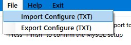
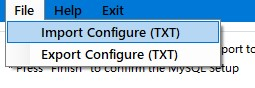

Intoduction
This application is a toolkit for data receive and storage via serial communication protocol.
Functions
- Receive raw data from serial port.
- Save data locally in TXT format
- Save data remotely in MySQL database
UI
1. Main UI
Main UI contains several sections:
(from top to buttom)
- Menu Section: functions/operations.
- ComPort Control: configure com port.
- Functions Section: function indicator.
- Data Status: indicate the data operation.
- Data Control: Mathcing Raw Data format to Database fields.
2. MySQL configure UI

Note: To successfully establish MySQL database remote connection and correctly upload the raw data to cloud, it is important to correctly configure all the section above.
- Login Section: MySQL database info (Import/Export/Manual input).
- Table and Fiels: Select the target table and fiels for raw data upload.
- Query Section: Confirmation section of selected database table and fields.
Usage


 
